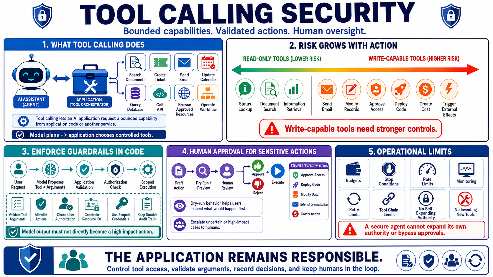

Tools, Agents, and Action Control
Connecting to LMS... Progress: in progress

Narration
Tool calling lets an AI application request a bounded capability from application code or another service. An agent may plan steps and choose tools to invoke. Tools may read information, search documents, create tickets, send email, update calendars, query databases, call APIs, interact with code, browse approved resources, or operate workflows. The security risk increases when model output can influence tool selection, arguments, or repeated actions.
Read-only tools and write-capable tools deserve different controls. A read-only status lookup can still expose sensitive data, but a write-capable tool can change systems, send communications, modify records, approve access, deploy code, create cost, or trigger external effects. Least privilege should apply to every tool credential. A tool should receive only the permissions, data scope, rate limit, and destination access needed for its approved purpose.
Model output should not directly become a high-impact action. The application should validate tool arguments, enforce allowlisted actions, check user authorization, constrain resource identifiers, and require approval gates for sensitive operations. Dry-run behavior can help users inspect what would happen before the action occurs. Scoped credentials, per-user authorization checks, and durable audit trails make it easier to understand who requested an action, what the model proposed, and what the application actually executed.
Agent behavior needs operational limits. Planning loops, retries, tool chains, and autonomous work should have budgets, stop conditions, rate limits, and monitoring. A secure agent should not be able to expand its own authority, invent new tools, bypass approvals, or use retrieved content as permission to act. The application remains responsible for controlling tool access, validating arguments, recording decisions, and escalating uncertain or high-impact cases to humans.